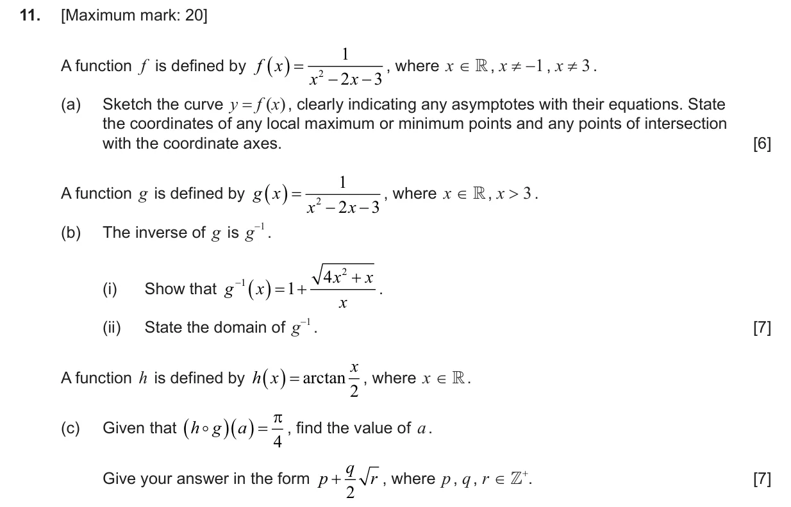
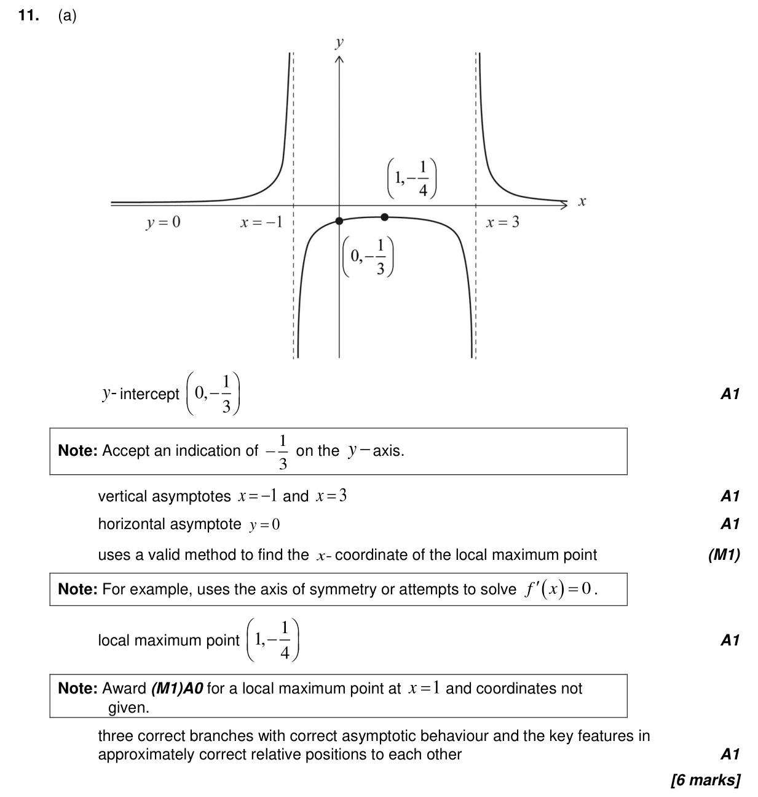
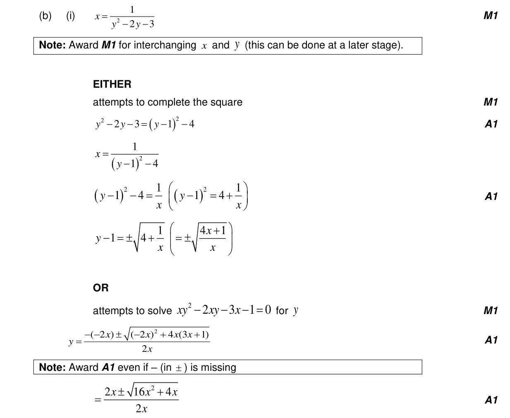
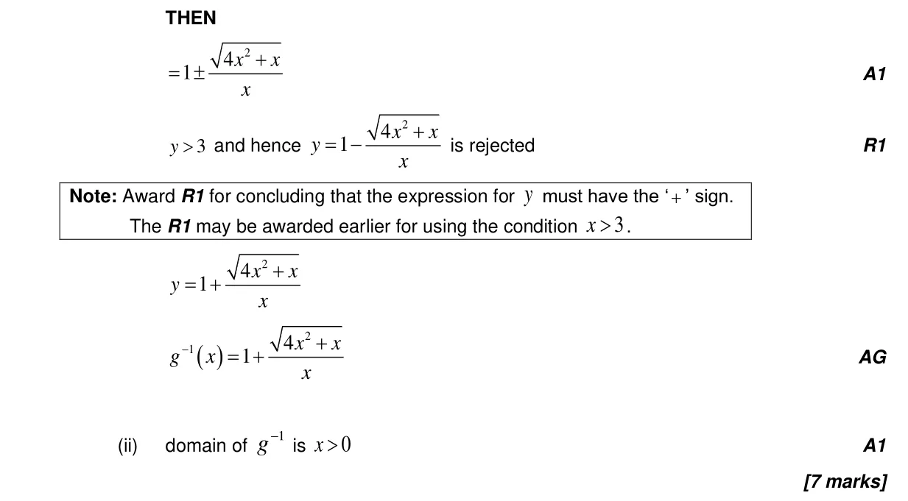
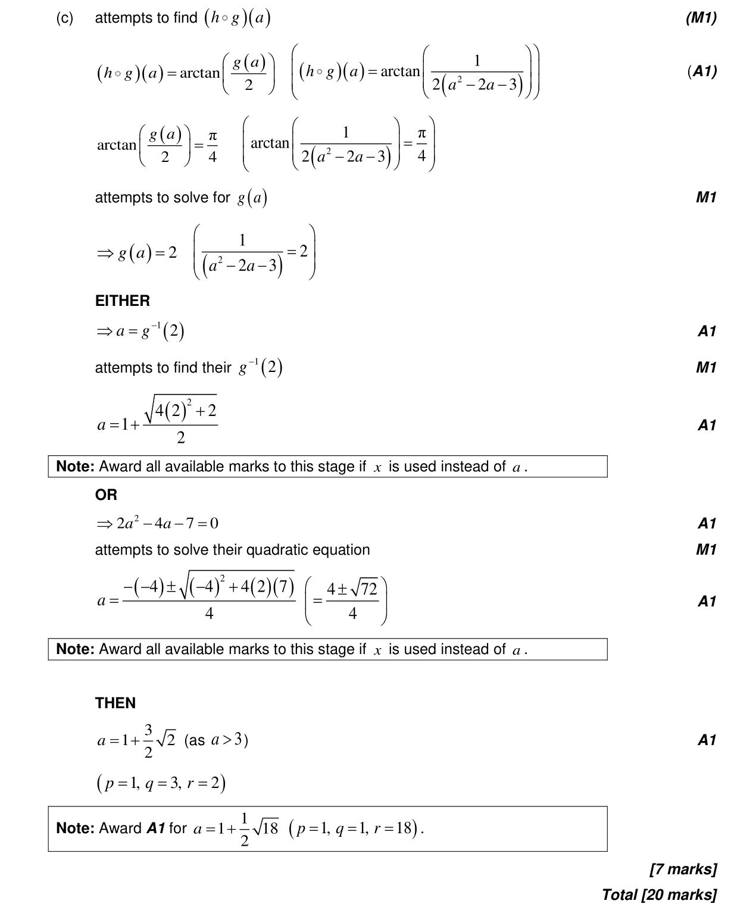

20 marks P1 TZ2 Section B No calculator 2.13 Rational functions with a quadratic numerator or denominator2.7 Solutions of quadratic equations and inequalities, discriminant and nature of roots2.14 Odd and even functions, inverses with a restricted domain, self-inverse functions2.5 Composite functions, identity and finding inverse3.9 Reciprocal trigonometric ratios, Pythagorean identities and inverse trigonometric functions Question Hide breakdown abc Markscheme 